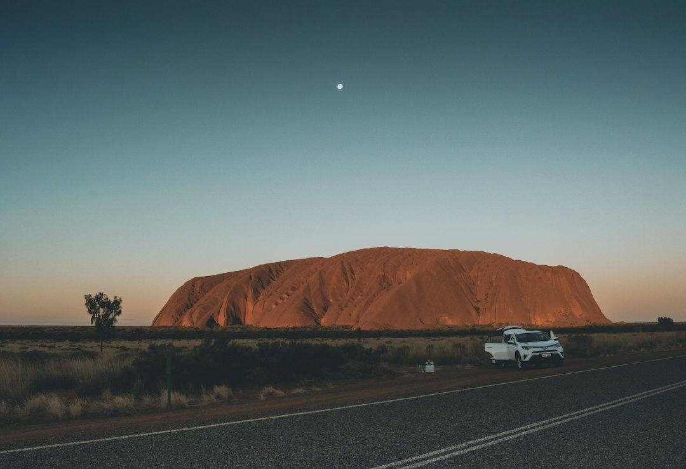

The useful answer is specific: the source presents a 2026 guide to oversized Australian roadside attractions, described as large-scale sculptures and structures found across the country. It names 2 examples, the Big Banana and the Giant Koala, and offers 4 discovery paths: directory, state browsing, category browsing and articles. Treat each listing as a trip lead, then check access, route impact and local visitor details before detouring.
For travellers searching for big things australia before a road trip, the practical question is how to turn a quirky landmark list into sensible stops without over-planning the journey.
Big Things Australia Explained
Big Thing Bible describes Australia's big things as large-scale sculptures and structures that have become iconic roadside attractions. That framing keeps the category broad. A stop may be a sculpture, a structure, a town marker, a photo opportunity or a piece of local humour, rather than a formal attraction with a long program.
The source page gives readers 4 ways in: a directory, state browsing, category browsing and articles. Use those paths for different decisions. Search by name when someone has already mentioned a landmark. Browse by state when the route is mostly fixed. Use categories when the trip needs a theme, such as oversized food icons or animals. Read articles when context would help you decide whether a detour deserves time.
What Counts as a Big Thing
The source wording gives a practical test: the attraction should be oversized, built as a sculpture or structure, and recognisable as part of Australia's roadside landmark culture. It does not need to be ticketed, highly polished or nationally famous. Some stops matter because they are simple, odd and immediately legible from the road.
The named examples show the range. The Big Banana points to a food icon, while the Giant Koala points to an Australian animal. A traveller can use that range to sort possible stops by interest rather than by fame.
- Choose a quick stop when the landmark sits close to the road you already plan to use.
- Choose a longer pause when the landmark is tied to a town, article or story you want to understand.
- Skip a detour when the object is interesting but the route cost outweighs the photo or break.
Planning Stops Without Turning the Trip Into a Checklist
Oversized landmarks work best when they support the journey. Start with the drive you already need to take, then add one or two possible stops that sit naturally near that path. A small shortlist leaves room for fuel, meals, daylight, weather and passengers who may not care about every novelty stop.
Before adding a landmark, decide its job. A quick photo stop should be easy to reach and easy to leave. A rest break should sit near other practical needs. A context stop should be worth reading about before or after the visit. If the only reason to go is completion, the detour may be weaker than it looks on a list.
During the trip, a directory-style search helps when you hear a specific name. Before the trip, browsing by state is cleaner because it matches the way most road routes are planned.
Who This Applies To
This guide suits families planning a long drive, visitors building a loose Australian itinerary, locals revisiting familiar routes, and writers or photographers looking for distinctive roadside subjects. It is for people who enjoy large, odd or locally loved objects but still want a sensible filter.
It is less useful for travellers who only need formal visitor information such as opening hours, ticket inclusions or event programs. The supplied source text does not provide those details. If a landmark sits near a business, park, town entrance or roadside pull-off, confirm the practical details from current local sources before relying on it.
A big thing can be culturally interesting without being elaborate. The source connects these landmarks with Australian culture and larrikin spirit, which explains why a short stop can still feel memorable.
A Sensible Pre-Visit Checklist
Separate durable information from details that may change. The durable point is that a large sculpture or structure is part of Australia's oversized roadside tradition. The changeable details are access, nearby services, parking conditions and whether the stop still suits the day.
For each possible stop, note the name, the state or broad region, why it interests you and what would make you skip it. Useful skip reasons include bad weather, tired passengers, a route that has already slipped, or a detour that no longer fits the arrival plan.
Keep the list short enough to be enjoyable. One well-timed landmark can add more character to a drive than several rushed stops that make the day feel like a collection task.
- Start with the route. Mark the drive you already need to take before adding any roadside landmark detours.
- Shortlist lightly. Choose a few oversized attractions that sit naturally near the route rather than trying to collect every possible stop.
- Check current details. Confirm access, parking and local conditions from current sources before relying on a stop.
- Keep a skip rule. Decide in advance what would make a detour no longer worth it on the day.
| Use case | Best path | Decision question |
|---|---|---|
| Known landmark name | Directory | Is this stop close enough to justify the pause? |
| Route by state | Browse by State | Which stops fit the day's drive without adding pressure? |
| Theme-based browsing | Browse by Category | Does this landmark match the photo or story you want? |
| Context before visiting | Articles | What background would make the stop more meaningful? |
Common questions
What are Australia's big things? The source page describes them as large-scale sculptures and structures that have become iconic roadside attractions. It frames them as quirky landmarks tied to Australian culture and larrikin spirit.
Which examples are named in the source text? The supplied page names the Big Banana and the Giant Koala. They are examples of the broader oversized roadside landmark category.
Is the source enough to plan a full trip? It is a useful discovery starting point because it points to a directory, state browsing, category browsing and articles. For a real journey, also confirm current access, route impact and local visitor details before travelling.
Should every big thing be treated as a major attraction? No. The source supports a broad category of roadside sculptures and structures, so some stops may be quick photo pauses while others may deserve more time.
This guide covers how to use an Australian oversized roadside landmark source for practical trip planning and stop selection.